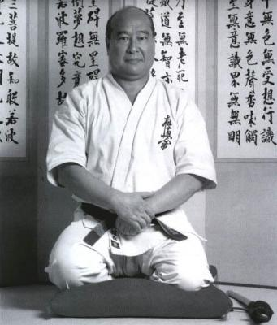
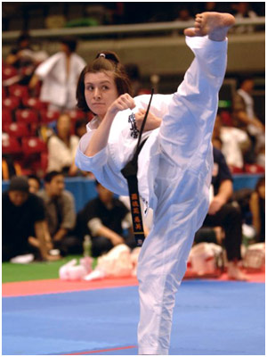
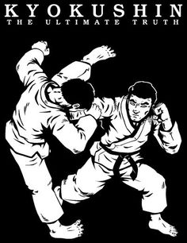

"One becomes a beginner after one thousand days of training and an expert after ten thousand days of practice."
- Masutatsu Oyama -
Discover Kyokushin

11 Mottos of Masutatsu Oyama
Throughout his life,
Sosai Mas Oyama studied many classic texts and writings regarding the martial arts,
summarizing his martial arts philosophy in 11 mottos, which are central to his teachings to the Kyokushin Way.
DOJO KUN
Written by Sosay Mas Oyama and the famous Japanese writer Eiji Yohikawa,
the Dojo Kun comprises a list of rules to follow in the Dojo, but moreover throughout all aspects of your life.

KATA
Translated as "shape" or "form", Katas are specific sequence of blocks, kicks and punches from one or more stances, involving a set number of movements.

Terminology
Rooted in tradition, Kyokushin Karate classes are taught using Japanese for techniques, counting, terminology, and more.